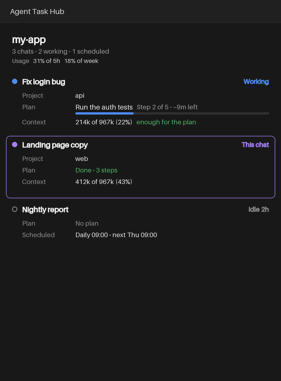

Every Claude Code chat in one pane
Running several Claude Code chats at once? Agent Task Hub shows them all beside your chat: what each one is doing, how much context it has left before compaction, and which one is waiting on you.
A free Claude Code mod. Reads the records Claude Code already keeps on your machine; changes nothing in your project.

Install in two lines
In Claude Code:
/plugin marketplace add TonyIsFool/agent-task-hub
/plugin install agent-task-hub@agent-task-hubStart a new chat and the pane opens beside it. /task-hub opens it again at any time.
What you see at a glance
Plan progress
Each chat's task list as a progress bar, the step in hand, and about how long the rest will take.
What waits on you
An open Allow? dialog, a question or a decision, marked in yellow, with a toast.
Context left
Context against the auto-compaction point, yellow from 80%, and whether the plan still fits.
File conflicts
A warning when two chats edit the same project file.
Schedules and background work
/loop and scheduled runs in plain words, background tasks by name, long commands with their time.
Account usage
How much of the 5-hour and weekly usage windows is gone, for when many chats run at once.
Compared with other ways
| Way | What you get | What is missing |
|---|---|---|
| Switch between chats by hand | The full conversation | One chat at a time; easy to miss the one that waits on you |
Run /context in each chat | Exact context use for that chat | One chat at a time; no sense of whether the plan still fits |
| A custom status line | One line about the chat you are in | Nothing about the other chats |
| Several terminal windows | Every chat on screen | Hard to read at a glance; no progress, forecast or conflicts |
| Agent Task Hub | Every chat in the project at a glance | Chats on this machine only |
Questions
How do I see all my Claude Code sessions at once?
Install Agent Task Hub. Every chat whose folder is inside your project shows up in one pane beside the chat, with its status, its plan as a progress bar and its context use. Type /task-hub to open the pane at any time.
How much context does a Claude Code chat have left before auto-compaction?
The pane shows each chat's context against its auto-compaction point, such as 588k of 967k (61%), yellow from 80% and red from 95%. While a plan runs it also says whether the rest likely fits.
How do I know when another chat needs my approval or has finished?
A chat with an open Allow? dialog, a question or a decision is marked Waiting for you in yellow, and a toast appears in the chat you are typing in. A chat that finishes a turn you started gets a finished toast.
Can it monitor parallel agents and scheduled /loop runs?
Yes. Background work is listed by name, long commands show as Running with their time, and /loop or scheduled wake-ups read as plain words with the next run.
Does it send my code or chats anywhere?
No. It reads the records Claude Code already keeps on your machine and draws a pane. The only model calls give a plan step written in another language a short English title, through your own Claude session.
Does it work in the terminal and the desktop app?
Both. In a terminal narrower than 144 columns the pane waits for /task-hub; a narrow pane switches to a compact layout.